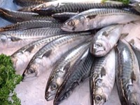

さばの漁獲量 都道府県ランキング
全37都道府県の順位と漁獲量
さばの漁獲量が全国で最も多いのは長崎県で、9万4,444 tです。全国（25万5,875 t）の37%を占めます。

| 順位 | 都道府県 | 漁獲量 | 全国に占める割合 |
|---|---|---|---|
| 1位 | 長崎県 | 9万4,444 t | 37% |
| 2位 | 島根県 | 2万7,601 t | 11% |
| 3位 | 宮城県 | 2万4,836 t | 9.7% |
| 4位 | 岩手県 | 1万1,896 t | 4.6% |
| 5位 | 鳥取県 | 1万1,578 t | 4.5% |
| 6位 | 茨城県 | 1万1,384 t | 4.4% |
| 7位 | 愛媛県 | 9,246 t | 3.6% |
| 8位 | 北海道 | 8,879 t | 3.5% |
| 9位 | 静岡県 | 8,635 t | 3.4% |
| 10位 | 石川県 | 7,998 t | 3.1% |
| 11位 | 鹿児島県 | 6,778 t | 2.6% |
| 12位 | 千葉県 | 6,406 t | 2.5% |
| 13位 | 三重県 | 3,910 t | 1.5% |
| 14位 | 宮崎県 | 3,631 t | 1.4% |
| 15位 | 和歌山県 | 2,501 t | 1.0% |
| 16位 | 青森県 | 2,466 t | 1.0% |
| 17位 | 福島県 | 2,360 t | 0.9% |
| 18位 | 山口県 | 2,023 t | 0.8% |
| 19位 | 高知県 | 1,834 t | 0.7% |
| 20位 | 福岡県 | 1,427 t | 0.6% |
| 21位 | 富山県 | 1,335 t | 0.5% |
| 22位 | 神奈川県 | 1,178 t | 0.5% |
| 23位 | 新潟県 | 733 t | 0.3% |
| 24位 | 大分県 | 727 t | 0.3% |
| 25位 | 福井県 | 621 t | 0.2% |
| 26位 | 京都府 | 550 t | 0.2% |
| 27位 | 熊本県 | 313 t | 0.1% |
| 28位 | 秋田県 | 232 t | 0.1% |
| 29位 | 兵庫県 | 187 t | 0.1% |
| 30位 | 佐賀県 | 62 t | 0.0% |
| 31位 | 徳島県 | 51 t | 0.0% |
| 32位 | 山形県 | 17 t | 0.0% |
| 33位 | 香川県 | 15 t | 0.0% |
| 34位 | 大阪府 | 11 t | 0.0% |
| 35位 | 愛知県 | 9 t | 0.0% |
| 36位 | 広島県 | 6 t | 0.0% |
| 37位 | 東京都 | 1 t | 0.0% |
PR

さばの漁獲量の推移（令和2年〜令和6年）
全国の漁獲量は、令和2年の39万296 tから令和6年の25万5,875 tへ、34%減りました。1位は入れ替わっています（令和2年は茨城県、令和4年は長崎県）。
| 年 | 全国 | 1位 | 2位 | 3位 |
|---|---|---|---|---|
| 令和6年 | 25万5,875 t | 長崎県9万4,444 t | 島根県2万7,601 t | 宮城県2万4,836 t |
| 令和5年 | 26万9,636 t | 長崎県7万6,146 t | 宮城県2万7,457 t | 島根県2万146 t |
| 令和4年 | 31万9,744 t | 長崎県7万903 t | 茨城県3万3,928 t | 宮城県3万3,827 t |
| 令和3年 | 44万1,837 t | 茨城県7万3,800 t | 長崎県7万1,198 t | 静岡県4万7,901 t |
| 令和2年 | 39万296 t | 茨城県6万2,819 t | 長崎県5万5,033 t | 静岡県3万7,956 t |
この数字について
- 分類：鯖の仲間
- 全国の漁獲量：25万5,875 t
- この数字が表すもの：漁獲量（海面漁業の漁獲量。養殖は含みません）
- 調査：海面漁業生産統計調査（海面漁業） 令和6年
- 37県分を調査（調査していない県は順位に入りません）
さばの漁獲量について、よくある質問
- さばの漁獲量が日本一の都道府県はどこですか？
- 長崎県です。海面漁業生産統計調査（海面漁業）（令和6年）で9万4,444 tでした。
- さばの漁獲量ランキング2位・3位はどこですか？
- 2位は島根県（2万7,601 t）、3位は宮城県（2万4,836 t）です。
- さばの漁獲量ランキング4位・5位はどこですか？
- 4位は岩手県（1万1,896 t）、5位は鳥取県（1万1,578 t）です。さばの全37県の順位は上の表のとおりです。
- さばの全国の漁獲量はどれくらいですか？
- 25万5,875 t（令和6年）です。